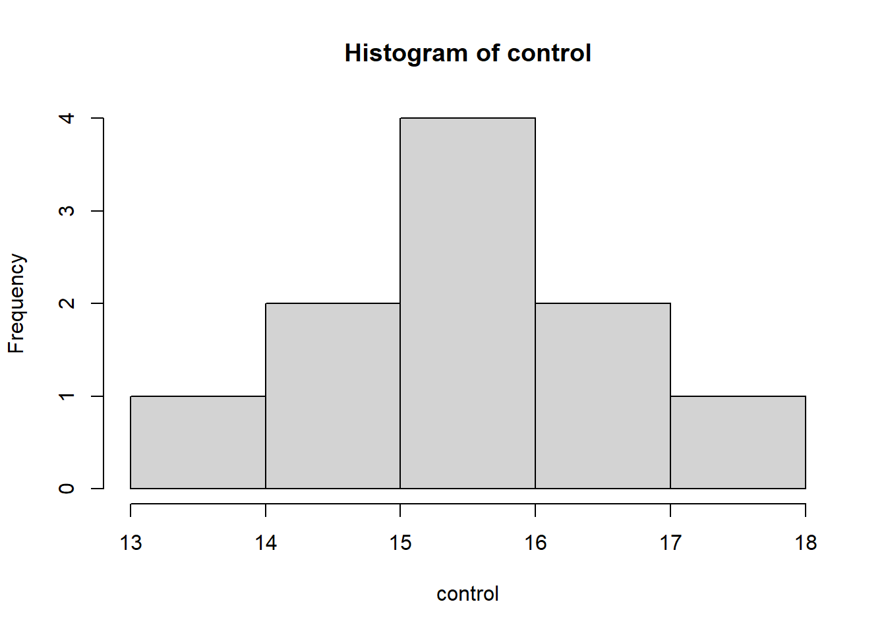
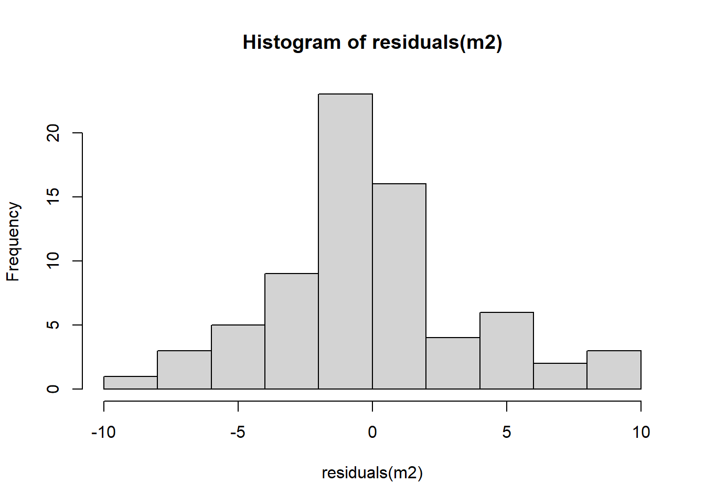
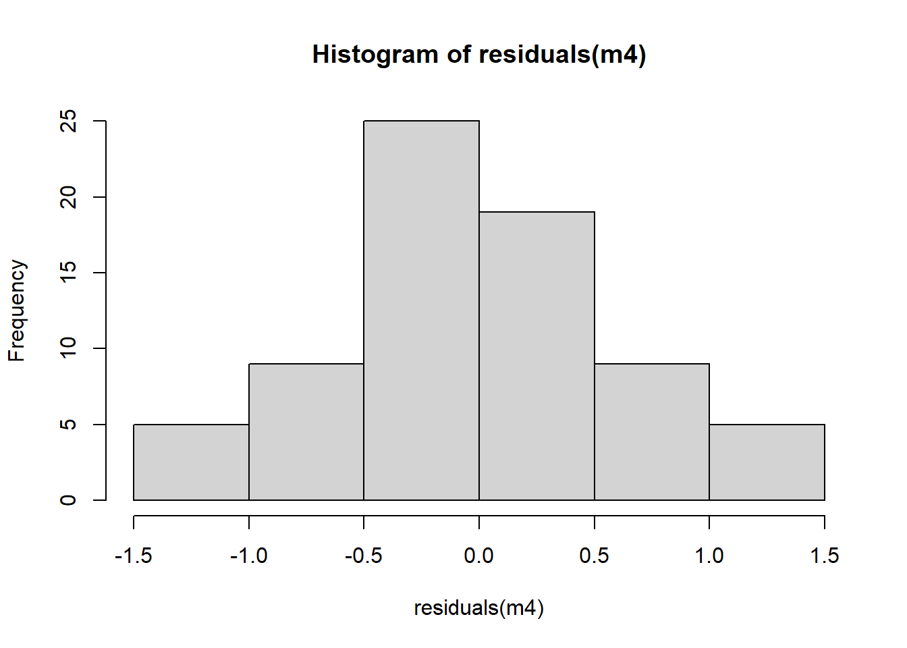

Nesta aula, aprendemos alguns testes estatisticos basicos, dependendo do tipo de análises.
Testes para amostras independentes
Code
#Dica: para procurar de que pacote a função vem, pesquisa na internet o nome da função, seguido de in r.#ativa os pacotes necessários library(gsheet)library(ggplot2)library(stats)library(dplyr)library(tidyr)library(report)library(rstatix)library(ggpubr)library(multcomp)#install_packages("see")#cria o objeto com os dados que serão utilizados. Esses dados são da planilha dados-diversos, disponibilizada pelo professor. dat_mg <-gsheet2tbl("https://docs.google.com/spreadsheets/d/1bq2N19DcZdtax2fQW9OHSGMR0X2__Z9T/edit?gid=983033137#gid=983033137")#faz primeiro o plot para analizar vsualmente os dados dat_mg |>ggplot(aes(trat, comp))+geom_jitter(width =0.1)
Testes para saber se há diferença estatistica
Teste T para amostras independentes
Code
?t.test #usando o caractere "?" seguido do nome da função, serve para mostrar como o comendo funciona, lhe dá mais informações sobre pacotes e funções. #transformar a planilha do formato longo para o formato largo dat_mg2 <- dat_mg |>pivot_wider(names_from = trat, values_from= comp)|> dplyr::select(-rep)attach(dat_mg2)t.test(Mg2, control) #Teste T, que compara os tratamentos.
Welch Two Sample t-test
data: Mg2 and control
t = -8.1549, df = 17.354, p-value = 2.423e-07
alternative hypothesis: true difference in means is not equal to 0
95 percent confidence interval:
-6.490393 -3.825607
sample estimates:
mean of x mean of y
10.520 15.678
Code
saída_t_teste <-t.test(Mg2, control) #cria um objeto para receber o resultado do teste T#invertendo as variáveis t.test(control, Mg2)
Welch Two Sample t-test
data: control and Mg2
t = 8.1549, df = 17.354, p-value = 2.423e-07
alternative hypothesis: true difference in means is not equal to 0
95 percent confidence interval:
3.825607 6.490393
sample estimates:
mean of x mean of y
15.678 10.520
Code
saída_teste_T <-t.test(control, Mg2) #cria um objeto para receber o resultado do teste T#aplica a função report para gerar texto de interpretação dde saída dos resultados, neste caso para o teste T library(report)report(saída_teste_T)
Effect sizes were labelled following Cohen's (1988) recommendations.
The Welch Two Sample t-test testing the difference between control and Mg2
(mean of x = 15.68, mean of y = 10.52) suggests that the effect is positive,
statistically significant, and large (difference = 5.16, 95% CI [3.83, 6.49],
t(17.35) = 8.15, p < .001; Cohen's d = 3.65, 95% CI [2.14, 5.12])
Code
#função para quando a tabela está no formato longo e não no largo, sem necessidade de transformação dos dados na tabela library(rstatix)t_test(comp ~ trat, data = dat_mg)
#Plotando o resultado do teste T e adicionando o valor de P manualmente #install.packages("ggpubr")library(ggpubr)p <-ggboxplot( dat_mg, x ="trat", y ="comp", color ="trat", palette ="jco")print(p) #comando para mostrar o gráfico plotado, caso não apareça
Code
#adiciona o valor de P manulamente p +stat_pvalue_manual(test_t, label ="p",y.position =18)+ylim(0,20)+labs(x ="Tratamento",y ="Comprimento (mm)")
Code
ggsave("plot2.png", bg ="white" ) #comando para salvar o gráfico
Teste de normalidade
Code
#testando a normalidade dos dados acima shapiro.test(Mg2)
Shapiro-Wilk normality test
data: Mg2
W = 0.97269, p-value = 0.9146
Code
shapiro.test(control)
Shapiro-Wilk normality test
data: control
W = 0.93886, p-value = 0.5404
Code
hist(Mg2)
Code
hist(control)

Code
# análise de variancia para validar o teste T, variancia e homogeneidadevar.test(dat_mg2$Mg2, dat_mg2$control)
F test to compare two variances
data: dat_mg2$Mg2 and dat_mg2$control
F = 1.4781, num df = 9, denom df = 9, p-value = 0.5698
alternative hypothesis: true ratio of variances is not equal to 1
95 percent confidence interval:
0.3671417 5.9508644
sample estimates:
ratio of variances
1.478111
Code
#ajuste no teste T caso as variancias não sejam homogeneas t.test(control, Mg2, var.equal =FALSE)
Welch Two Sample t-test
data: control and Mg2
t = 8.1549, df = 17.354, p-value = 2.423e-07
alternative hypothesis: true difference in means is not equal to 0
95 percent confidence interval:
3.825607 6.490393
sample estimates:
mean of x mean of y
15.678 10.520
#faz um teste de variancia var.test(unaided, aided)
F test to compare two variances
data: unaided and aided
F = 20.978, num df = 9, denom df = 9, p-value = 0.000106
alternative hypothesis: true ratio of variances is not equal to 1
95 percent confidence interval:
5.210754 84.459185
sample estimates:
ratio of variances
20.97847
Code
hist(unaided)
Code
hist(aided)
Code
shapiro.test(unaided)
Shapiro-Wilk normality test
data: unaided
W = 0.7748, p-value = 0.007155
Code
shapiro.test(aided)
Shapiro-Wilk normality test
data: aided
W = 0.92852, p-value = 0.4335
Code
#como a variancia foi heterogenea, faz o seguinte ajuste no testet.test(unaided, aided, paired =TRUE, var.equal =FALSE)
Paired t-test
data: unaided and aided
t = -4.4214, df = 9, p-value = 0.001668
alternative hypothesis: true mean difference is not equal to 0
95 percent confidence interval:
-0.3552353 -0.1147647
sample estimates:
mean difference
-0.235
Code
#teste de Wilcoxon se apresenta como uma alterativa ao teste t pareado, ou seja, quando o objetivo também é verificar se existe diferença significativa de uma variável numérica entre dois grupos de interesse.wilcox.test(unaided, aided)
Wilcoxon rank sum test with continuity correction
data: unaided and aided
W = 0, p-value = 0.0001756
alternative hypothesis: true location shift is not equal to 0
Code
#teste equivalente Mann-Whitney é o teste não paramétrico equivalente ao teste t para amostras independenteswilcox.test(unaided, aided, paired =FALSE)
Wilcoxon rank sum test with continuity correction
data: unaided and aided
W = 0, p-value = 0.0001756
alternative hypothesis: true location shift is not equal to 0
Code
#paired = false o transforma num mann-whitney
Testes para 3 ou mais niveis de fator (3 ou mais tratamentos)
#Anova anova1 <-aov(tcm ~ especie, data = micelial) anova1
Call:
aov(formula = tcm ~ especie, data = micelial)
Terms:
especie Residuals
Sum of Squares 1.4695800 0.4679167
Deg. of Freedom 4 25
Residual standard error: 0.1368089
Estimated effects may be unbalanced
Code
anova(anova1)
Analysis of Variance Table
Response: tcm
Df Sum Sq Mean Sq F value Pr(>F)
especie 4 1.46958 0.36739 19.629 2.028e-07 ***
Residuals 25 0.46792 0.01872
---
Signif. codes: 0 '***' 0.001 '**' 0.01 '*' 0.05 '.' 0.1 ' ' 1
Code
#outra forma de fazer a ANOVA anova2 <-lm(tcm ~ especie, data = micelial)anova(anova2)
Analysis of Variance Table
Response: tcm
Df Sum Sq Mean Sq F value Pr(>F)
especie 4 1.46958 0.36739 19.629 2.028e-07 ***
Residuals 25 0.46792 0.01872
---
Signif. codes: 0 '***' 0.001 '**' 0.01 '*' 0.05 '.' 0.1 ' ' 1
Code
#residuo é a diferença entre o estimado pelo modelo e o observado #será que os resíduos são normais? residuals(anova1) #resíduos da anova
shapiro.test(residuals(anova1)) #testa a normalidade dos resíduos
Shapiro-Wilk normality test
data: residuals(anova1)
W = 0.9821, p-value = 0.8782
Code
#teste para variancias de modelo #teste bartlett testa se as variancias são homogeneasbartlett.test(tcm ~ especie, data = micelial)
Bartlett test of homogeneity of variances
data: tcm by especie
Bartlett's K-squared = 4.4367, df = 4, p-value = 0.3501
Code
#teste de levene tem o mesmo propósito (menos sensível a desvios de normalidadelevene_test(tcm ~especie, data = micelial)
# A tibble: 1 × 4
df1 df2 statistic p
<int> <int> <dbl> <dbl>
1 4 25 1.76 0.169
Code
#Use Levene quando os dados não forem normalmente distribuídos.#Use Bartlett quando os dados forem normalmente distribuídos.#Se ambos os testes indicarem que as variâncias são iguais, você pode seguir com a ANOVA.library(emmeans)#pacote para calcular as médias do modelo e intervalo de confiança. Realiza contrastes e estimativas de médias após a modelagem estatística m <-emmeans(anova2, ~ especie) m
#emmeans nos deu a média por espécies, então usa o multicomp para comparar e visualizar as diferenças entre elas #install.packages("multcomp")#install.packages("multcompView")library(multcomp)library(multcompView)#o pacote multcom realiza comparações múltiplas (post hoc) após modelos lineares, modelos lineares generalizados, e outros tipos de modeloscld(m) #mostra letras compactas, ou seja, os grupos. Nesse caso, do emmeans
especie emmean SE df lower.CL upper.CL .group
Fgra 0.912 0.0559 25 0.797 1.03 1
Faus 1.237 0.0559 25 1.122 1.35 2
Fcor 1.322 0.0559 25 1.207 1.44 2
Fmer 1.427 0.0559 25 1.312 1.54 23
Fasi 1.572 0.0559 25 1.457 1.69 3
Confidence level used: 0.95
P value adjustment: tukey method for comparing a family of 5 estimates
significance level used: alpha = 0.05
NOTE: If two or more means share the same grouping symbol,
then we cannot show them to be different.
But we also did not show them to be the same.
Code
pwpm(m) #mostra as médias na diagonal e compara entre os tratamentos em forma de matriz
#no caso acima a normalidade estava ok e as variancias eram nos resíduos
Quando os dados não seguem distribuição normal…
Code
#aqui utilizamos um banco de dados do proprio R. insetos <- InsectSpraysView(insetos) #comando para visualizar o conjunto de dados insetos |>ggplot(aes(spray, count))+geom_boxplot(outlier.colour =NA)+geom_jitter(width =0.1)
Code
#modelo de anova para inspecionar normalidade e variancia anova3 <-lm(count ~spray, data = insetos)anova(anova3)
Analysis of Variance Table
Response: count
Df Sum Sq Mean Sq F value Pr(>F)
spray 5 2668.8 533.77 34.702 < 2.2e-16 ***
Residuals 66 1015.2 15.38
---
Signif. codes: 0 '***' 0.001 '**' 0.01 '*' 0.05 '.' 0.1 ' ' 1
Code
#teste para variaveis homogeneas bartlett.test(count ~spray, data = insetos)
Bartlett test of homogeneity of variances
data: count by spray
Bartlett's K-squared = 25.96, df = 5, p-value = 9.085e-05
Code
#sempre que a variancia for heterogenea tem que ajustar #Ajusta um modelo linear (lm) para verificar se o tipo de spray tem efeito no número de insetos mortos (count) m2 <-lm(count ~spray, data = insetos)hist(residuals (m2))

Code
shapiro.test(residuals(m2))
Shapiro-Wilk normality test
data: residuals(m2)
W = 0.96006, p-value = 0.02226
Code
#neste caso não é distribuição normal e nem homogenea #verificar visualmente se os resíduos do modelo m2 seguem uma distribuição normalqqnorm(residuals(m2))qqline(residuals(m2))
Code
#quando chamar qqnorm e qqline juntos a linha e os pontos tem que estar juntos, para ser de fato normal, indicar normalidade.
Alternativas quando os dados não seguirem normalidade e homogenedade
Tem 3 alternativas para os casos em que isso ocorra, dados não normais e heterogeneos (em ANOVA)
Alternativa 1: transformação de dados, transformar a resposta
Shapiro-Wilk normality test
data: residuals(m3)
W = 0.8663, p-value = 1.736e-06
Code
qqnorm(residuals(m3))qqline(residuals(m3))
Code
#continuou com o erro, agora testa raiz quadrada #REGRA: neste caso a raiz é uma boa saída pois quando são dados de contagem numa distribuição de poisson não normal, a raiz quadrada tende a normalizar a contagem individual. #aplica o modelo raiz quadrada e aplica a Anova parametrica normal m4 <-lm(sqrt(count) ~ spray, data = insetos)hist(residuals (m4))

Code
shapiro.test(residuals(m4))
Shapiro-Wilk normality test
data: residuals(m4)
W = 0.98721, p-value = 0.6814
Code
qqnorm(residuals(m4))qqline(residuals(m4))
Code
#testar se as variâncias são homogêneasbartlett.test(sqrt(count) ~spray, data = insetos)
Bartlett test of homogeneity of variances
data: sqrt(count) by spray
Bartlett's K-squared = 3.7525, df = 5, p-value = 0.5856
Code
anova(m4)
Analysis of Variance Table
Response: sqrt(count)
Df Sum Sq Mean Sq F value Pr(>F)
spray 5 88.438 17.6876 44.799 < 2.2e-16 ***
Residuals 66 26.058 0.3948
---
Signif. codes: 0 '***' 0.001 '**' 0.01 '*' 0.05 '.' 0.1 ' ' 1
Code
report(m4)
We fitted a linear model (estimated using OLS) to predict count with spray
(formula: sqrt(count) ~ spray). The model explains a statistically significant
and substantial proportion of variance (R2 = 0.77, F(5, 66) = 44.80, p < .001,
adj. R2 = 0.76). The model's intercept, corresponding to spray = A, is at 3.76
(95% CI [3.40, 4.12], t(66) = 20.73, p < .001). Within this model:
- The effect of spray [B] is statistically non-significant and positive (beta =
0.12, 95% CI [-0.40, 0.63], t(66) = 0.45, p = 0.653; Std. beta = 0.04, 95% CI
[-0.15, 0.23])
- The effect of spray [C] is statistically significant and negative (beta =
-2.52, 95% CI [-3.03, -2.00], t(66) = -9.81, p < .001; Std. beta = -0.94, 95%
CI [-1.13, -0.75])
- The effect of spray [D] is statistically significant and negative (beta =
-1.60, 95% CI [-2.11, -1.08], t(66) = -6.22, p < .001; Std. beta = -0.59, 95%
CI [-0.79, -0.40])
- The effect of spray [E] is statistically significant and negative (beta =
-1.95, 95% CI [-2.46, -1.44], t(66) = -7.61, p < .001; Std. beta = -0.73, 95%
CI [-0.92, -0.54])
- The effect of spray [F] is statistically non-significant and positive (beta =
0.26, 95% CI [-0.25, 0.77], t(66) = 1.01, p = 0.318; Std. beta = 0.10, 95% CI
[-0.09, 0.29])
Standardized parameters were obtained by fitting the model on a standardized
version of the dataset. 95% Confidence Intervals (CIs) and p-values were
computed using a Wald t-distribution approximation.
Code
m44 <-emmeans(m4, ~spray, type ="response")cld(m44)
spray response SE df lower.CL upper.CL .group
C 1.55 0.452 66 0.779 2.58 1
E 3.27 0.656 66 2.095 4.72 12
D 4.68 0.785 66 3.248 6.38 2
A 14.14 1.360 66 11.550 17.00 3
B 15.03 1.410 66 12.352 17.97 3
F 16.15 1.460 66 13.370 19.19 3
Confidence level used: 0.95
Intervals are back-transformed from the sqrt scale
Note: contrasts are still on the sqrt scale. Consider using
regrid() if you want contrasts of back-transformed estimates.
P value adjustment: tukey method for comparing a family of 6 estimates
significance level used: alpha = 0.05
NOTE: If two or more means share the same grouping symbol,
then we cannot show them to be different.
But we also did not show them to be the same.
Code
plot(m44)
Alternativa 2: teste não parametrico equivalente a anova
Code
#ou seja ele não depende das duas premissas de normalidade e homogeneidade, ele faz um ranqueamento, tipo o wilcox#O teste de Kruskal-Wallis é um método estatístico não paramétrico que compara se três ou mais grupos têm a mesma distribuição. #mas este teste só diz que pelo menos um é diferente, mas não aponta quais são. kruskal.test(count ~ spray, data = insetos)
Kruskal-Wallis rank sum test
data: count by spray
Kruskal-Wallis chi-squared = 54.691, df = 5, p-value = 1.511e-10
Code
kruskal_test(insetos, count ~ spray)
# A tibble: 1 × 6
.y. n statistic df p method
* <chr> <int> <dbl> <int> <dbl> <chr>
1 count 72 54.7 5 1.51e-10 Kruskal-Wallis
Code
#Para realizar o teste de Kruskal-Wallis e fazer comparações múltiplas pós-hoc entre os grupos, semelhante ao Tukey, mas para dados não paramétricos.library(agricolae) kruskal.test(insetos$count, insetos$spray, group =TRUE, console =TRUE)
Kruskal-Wallis rank sum test
data: insetos$count and insetos$spray
Kruskal-Wallis chi-squared = 54.691, df = 5, p-value = 1.511e-10
Code
#Mostra o p valor e a diferença entre as médias. O "group = true" exibe as letras dos agrupamentos, enquanto "console = true" apresenta os resultados no console#como foi significante, transforma para rank para fazer o não parametrico. m5 <-lm(rank(count) ~spray, data = insetos) m5
Shapiro-Wilk normality test
data: residuals(m5)
W = 0.98287, p-value = 0.4342
Code
qqnorm(residuals(m5))qqline(residuals(m5))
Code
#quando partir para a alternativa a anova parametrica? ou seja, quando não possui normalidade nem homogeneidade dos dados.(usando shapiro-wilk, que testa normalidade dos residuos, e o bartlett ou levene que testam a homogeneidade)#essas comparações multiplas são post-hoc, as duas primeiras opções, mas quando não dá siguinificativo não faz post hoc, pois não tem diferença entre grupos #quando não tem via de transformação, nada resolveu o problema de normalidade e homocedasticidade, tem que usar não parametrico mesmo!
Code
#utilizando o pacote DHARMa #install.packages("DHARMa")library(DHARMa)#faz uma simulação dos residuos, não pega somente observação #o DHARMa é mais intuitivo, ao invés de usar Levene, hist, qqnorm, shapiro..., pode usar o teste DHARMa como padrão. Para ver visualmente todas estas estatisticas em uma única função, por meio da simulação dos resíduos. Dando siguinificativo, vai para os testes post hoclibrary(emmeans)library(tidyverse)insetos <- InsectSpraysView(insetos)m2 <-lm(count ~ spray, data = insetos) #variâncias não são homogêneasplot(simulateResiduals(m2))
Code
m2 <-lm(log(count+1) ~ spray, data = insetos) #transformar os dados para tornar as variâncias homogêneasplot(simulateResiduals(m2))
Code
library(emmeans) #para estimar as médiaslibrary(multcomp)m2.2<-emmeans(m2, ~ spray, type ="response")cld(m2.2)
spray response SE df lower.CL upper.CL .group
C 1.59 0.306 66 1.05 2.28 1
E 3.16 0.492 66 2.29 4.27 12
D 4.55 0.655 66 3.38 6.02 2
A 13.83 1.750 66 10.72 17.78 3
B 14.75 1.860 66 11.44 18.93 3
F 15.70 1.970 66 12.19 20.15 3
Confidence level used: 0.95
Intervals are back-transformed from the log(mu + 1) scale
Note: contrasts are still on the log(mu + 1) scale. Consider using
regrid() if you want contrasts of back-transformed estimates.
P value adjustment: tukey method for comparing a family of 6 estimates
significance level used: alpha = 0.05
NOTE: If two or more means share the same grouping symbol,
then we cannot show them to be different.
But we also did not show them to be the same.
#nas ANOVAs, possuem um tipos especial de modelo linear generalizado, onde a distribuição é normal, Gaussiana, existem familias de dirtrubuição. #no caso de dados de contagem, como de insetos, usa de Poisson, neste caso não galsiana. m2.3<-glm(count ~ spray, data = insetos, family = poisson) m2.3
medias_m2.3<-emmeans(m2.3, ~ spray, type ="response") medias_m2.3
spray rate SE df asymp.LCL asymp.UCL
A 14.50 1.100 Inf 12.50 16.82
B 15.33 1.130 Inf 13.27 17.72
C 2.08 0.417 Inf 1.41 3.08
D 4.92 0.640 Inf 3.81 6.35
E 3.50 0.540 Inf 2.59 4.74
F 16.67 1.180 Inf 14.51 19.14
Confidence level used: 0.95
Intervals are back-transformed from the log scale
Code
cld(medias_m2.3)
spray rate SE df asymp.LCL asymp.UCL .group
C 2.08 0.417 Inf 1.41 3.08 1
E 3.50 0.540 Inf 2.59 4.74 12
D 4.92 0.640 Inf 3.81 6.35 2
A 14.50 1.100 Inf 12.50 16.82 3
B 15.33 1.130 Inf 13.27 17.72 3
F 16.67 1.180 Inf 14.51 19.14 3
Confidence level used: 0.95
Intervals are back-transformed from the log scale
P value adjustment: tukey method for comparing a family of 6 estimates
Tests are performed on the log scale
significance level used: alpha = 0.05
NOTE: If two or more means share the same grouping symbol,
then we cannot show them to be different.
But we also did not show them to be the same.
Code
#outra forma de testar o modelo #install.packages("performance") library(performance)performance(m2.3)
#dados de sim e não, usa a familia binomial #o professor recomenda usar o DHARMa ao invés do check model, ele não é tão consistente
Source Code
---title: "Aula_3_Testes_estatisticos"author: "Karine Mesquita"format: html: code-fold: true # permite esconder/mostrar os códigos (com uma abinha) code-tools: true # adiciona botões de copiar/mostrar código toc: true # inclui um sumário (índice)editor: visualeditor_options: chunk_output_type: inlineexecute: warning: false # oculta mensagens de warning message: false # oculta mensagens do tipo "package loaded" echo: true # mostra o código include: true # mostra o output dos chunks---# Notas de aula# Aula 3_Testes estatisticosNesta aula, aprendemos alguns testes estatisticos basicos, dependendo do tipo de análises.## Testes para amostras independentes```{r}#Dica: para procurar de que pacote a função vem, pesquisa na internet o nome da função, seguido de in r.#ativa os pacotes necessários library(gsheet)library(ggplot2)library(stats)library(dplyr)library(tidyr)library(report)library(rstatix)library(ggpubr)library(multcomp)#install_packages("see")#cria o objeto com os dados que serão utilizados. Esses dados são da planilha dados-diversos, disponibilizada pelo professor. dat_mg <-gsheet2tbl("https://docs.google.com/spreadsheets/d/1bq2N19DcZdtax2fQW9OHSGMR0X2__Z9T/edit?gid=983033137#gid=983033137")#faz primeiro o plot para analizar vsualmente os dados dat_mg |>ggplot(aes(trat, comp))+geom_jitter(width =0.1)```### Testes para saber se há diferença estatistica#### Teste T para amostras independentes```{r}?t.test #usando o caractere "?" seguido do nome da função, serve para mostrar como o comendo funciona, lhe dá mais informações sobre pacotes e funções. #transformar a planilha do formato longo para o formato largo dat_mg2 <- dat_mg |>pivot_wider(names_from = trat, values_from= comp)|> dplyr::select(-rep)attach(dat_mg2)t.test(Mg2, control) #Teste T, que compara os tratamentos.saída_t_teste <-t.test(Mg2, control) #cria um objeto para receber o resultado do teste T#invertendo as variáveis t.test(control, Mg2)saída_teste_T <-t.test(control, Mg2) #cria um objeto para receber o resultado do teste T#aplica a função report para gerar texto de interpretação dde saída dos resultados, neste caso para o teste T library(report)report(saída_teste_T)#função para quando a tabela está no formato longo e não no largo, sem necessidade de transformação dos dados na tabela library(rstatix)t_test(comp ~ trat, data = dat_mg)test_t <-t_test(comp ~ trat, data = dat_mg)test_t#Plotando o resultado do teste T e adicionando o valor de P manualmente #install.packages("ggpubr")library(ggpubr)p <-ggboxplot( dat_mg, x ="trat", y ="comp", color ="trat", palette ="jco")print(p) #comando para mostrar o gráfico plotado, caso não apareça #adiciona o valor de P manulamente p +stat_pvalue_manual(test_t, label ="p",y.position =18)+ylim(0,20)+labs(x ="Tratamento",y ="Comprimento (mm)")ggsave("plot2.png", bg ="white" ) #comando para salvar o gráfico ```#### Teste de normalidade```{r}#testando a normalidade dos dados acima shapiro.test(Mg2)shapiro.test(control)hist(Mg2)hist(control)# análise de variancia para validar o teste T, variancia e homogeneidadevar.test(dat_mg2$Mg2, dat_mg2$control)#ajuste no teste T caso as variancias não sejam homogeneas t.test(control, Mg2, var.equal =FALSE)```### Teste T para amostras dependentes```{r}library(gsheet)escala <-gsheet2tbl("https://docs.google.com/spreadsheets/d/1bq2N19DcZdtax2fQW9OHSGMR0X2__Z9T/edit?gid=1729131173#gid=1729131173")escalat_test(acuracia ~ assessment, data = escala,paired =TRUE,var.equal =FALSE)t_test#plotando o gráfico para análise visuallibrary(ggplot2)escala |>ggplot(aes(assessment, acuracia))+geom_boxplot()unaided <- escala |> dplyr::filter(assessment =="Unaided") |> dplyr::select(acuracia) |> dplyr::pull()unaided aided <- escala |> dplyr::filter(assessment =="Aided1") |> dplyr::select(acuracia) |> dplyr::pull() aided#faz um teste de variancia var.test(unaided, aided)hist(unaided)hist(aided)shapiro.test(unaided)shapiro.test(aided) #como a variancia foi heterogenea, faz o seguinte ajuste no testet.test(unaided, aided, paired =TRUE, var.equal =FALSE)#teste de Wilcoxon se apresenta como uma alterativa ao teste t pareado, ou seja, quando o objetivo também é verificar se existe diferença significativa de uma variável numérica entre dois grupos de interesse.wilcox.test(unaided, aided)#teste equivalente Mann-Whitney é o teste não paramétrico equivalente ao teste t para amostras independenteswilcox.test(unaided, aided, paired =FALSE)#paired = false o transforma num mann-whitney ```### Testes para 3 ou mais niveis de fator (3 ou mais tratamentos)```{r} micelial <-gsheet2tbl("https://docs.google.com/spreadsheets/d/1bq2N19DcZdtax2fQW9OHSGMR0X2__Z9T/edit?gid=959387827#gid=959387827")#Análise visual micelial |>ggplot(aes(especie, tcm))+geom_boxplot(outlier.colour =NA)+geom_jitter(width =0.1)#Anova anova1 <-aov(tcm ~ especie, data = micelial) anova1 anova(anova1)#outra forma de fazer a ANOVA anova2 <-lm(tcm ~ especie, data = micelial)anova(anova2)#residuo é a diferença entre o estimado pelo modelo e o observado #será que os resíduos são normais? residuals(anova1) #resíduos da anovahist(residuals(anova1))shapiro.test(residuals(anova1)) #testa a normalidade dos resíduos#teste para variancias de modelo #teste bartlett testa se as variancias são homogeneasbartlett.test(tcm ~ especie, data = micelial)#teste de levene tem o mesmo propósito (menos sensível a desvios de normalidadelevene_test(tcm ~especie, data = micelial)#Use Levene quando os dados não forem normalmente distribuídos.#Use Bartlett quando os dados forem normalmente distribuídos.#Se ambos os testes indicarem que as variâncias são iguais, você pode seguir com a ANOVA.library(emmeans)#pacote para calcular as médias do modelo e intervalo de confiança. Realiza contrastes e estimativas de médias após a modelagem estatística m <-emmeans(anova2, ~ especie) m #emmeans nos deu a média por espécies, então usa o multicomp para comparar e visualizar as diferenças entre elas #install.packages("multcomp")#install.packages("multcompView")library(multcomp)library(multcompView)#o pacote multcom realiza comparações múltiplas (post hoc) após modelos lineares, modelos lineares generalizados, e outros tipos de modeloscld(m) #mostra letras compactas, ou seja, os grupos. Nesse caso, do emmeanspwpm(m) #mostra as médias na diagonal e compara entre os tratamentos em forma de matriz pairs(m) #mostra as médias em lista e compara, igual o anterior, mas com formas de saída diferentes. Mostra os resultados pareados#no caso acima a normalidade estava ok e as variancias eram nos resíduos ```### Quando os dados não seguem distribuição normal...```{r}#aqui utilizamos um banco de dados do proprio R. insetos <- InsectSpraysView(insetos) #comando para visualizar o conjunto de dados insetos |>ggplot(aes(spray, count))+geom_boxplot(outlier.colour =NA)+geom_jitter(width =0.1)#modelo de anova para inspecionar normalidade e variancia anova3 <-lm(count ~spray, data = insetos)anova(anova3)#teste para variaveis homogeneas bartlett.test(count ~spray, data = insetos)#sempre que a variancia for heterogenea tem que ajustar #Ajusta um modelo linear (lm) para verificar se o tipo de spray tem efeito no número de insetos mortos (count) m2 <-lm(count ~spray, data = insetos)hist(residuals (m2))shapiro.test(residuals(m2))#neste caso não é distribuição normal e nem homogenea #verificar visualmente se os resíduos do modelo m2 seguem uma distribuição normalqqnorm(residuals(m2))qqline(residuals(m2))#quando chamar qqnorm e qqline juntos a linha e os pontos tem que estar juntos, para ser de fato normal, indicar normalidade. ```### Alternativas quando os dados não seguirem normalidade e homogenedadeTem 3 alternativas para os casos em que isso ocorra, dados não normais e heterogeneos (em ANOVA)#### Alternativa 1: transformação de dados, transformar a resposta```{r}#primeiro testa função log m3 <-lm(log(count +0.1) ~spray, data = insetos)hist(residuals (m3))shapiro.test(residuals(m3))qqnorm(residuals(m3))qqline(residuals(m3))#continuou com o erro, agora testa raiz quadrada #REGRA: neste caso a raiz é uma boa saída pois quando são dados de contagem numa distribuição de poisson não normal, a raiz quadrada tende a normalizar a contagem individual. #aplica o modelo raiz quadrada e aplica a Anova parametrica normal m4 <-lm(sqrt(count) ~ spray, data = insetos)hist(residuals (m4))shapiro.test(residuals(m4))qqnorm(residuals(m4))qqline(residuals(m4))#testar se as variâncias são homogêneasbartlett.test(sqrt(count) ~spray, data = insetos)anova(m4)report(m4) m44 <-emmeans(m4, ~spray, type ="response")cld(m44)plot(m44)```#### Alternativa 2: teste não parametrico equivalente a anova```{r}#ou seja ele não depende das duas premissas de normalidade e homogeneidade, ele faz um ranqueamento, tipo o wilcox#O teste de Kruskal-Wallis é um método estatístico não paramétrico que compara se três ou mais grupos têm a mesma distribuição. #mas este teste só diz que pelo menos um é diferente, mas não aponta quais são. kruskal.test(count ~ spray, data = insetos)kruskal_test(insetos, count ~ spray)#Para realizar o teste de Kruskal-Wallis e fazer comparações múltiplas pós-hoc entre os grupos, semelhante ao Tukey, mas para dados não paramétricos.library(agricolae) kruskal.test(insetos$count, insetos$spray, group =TRUE, console =TRUE) #Mostra o p valor e a diferença entre as médias. O "group = true" exibe as letras dos agrupamentos, enquanto "console = true" apresenta os resultados no console#como foi significante, transforma para rank para fazer o não parametrico. m5 <-lm(rank(count) ~spray, data = insetos) m5hist(residuals (m5))shapiro.test(residuals(m5))qqnorm(residuals(m5))qqline(residuals(m5))#quando partir para a alternativa a anova parametrica? ou seja, quando não possui normalidade nem homogeneidade dos dados.(usando shapiro-wilk, que testa normalidade dos residuos, e o bartlett ou levene que testam a homogeneidade)#essas comparações multiplas são post-hoc, as duas primeiras opções, mas quando não dá siguinificativo não faz post hoc, pois não tem diferença entre grupos #quando não tem via de transformação, nada resolveu o problema de normalidade e homocedasticidade, tem que usar não parametrico mesmo!``````{r}#utilizando o pacote DHARMa #install.packages("DHARMa")library(DHARMa)#faz uma simulação dos residuos, não pega somente observação #o DHARMa é mais intuitivo, ao invés de usar Levene, hist, qqnorm, shapiro..., pode usar o teste DHARMa como padrão. Para ver visualmente todas estas estatisticas em uma única função, por meio da simulação dos resíduos. Dando siguinificativo, vai para os testes post hoclibrary(emmeans)library(tidyverse)insetos <- InsectSpraysView(insetos)m2 <-lm(count ~ spray, data = insetos) #variâncias não são homogêneasplot(simulateResiduals(m2))m2 <-lm(log(count+1) ~ spray, data = insetos) #transformar os dados para tornar as variâncias homogêneasplot(simulateResiduals(m2))library(emmeans) #para estimar as médiaslibrary(multcomp)m2.2<-emmeans(m2, ~ spray, type ="response")cld(m2.2)```#### Alternativa 3: alternativa paramétrica - Modelos lineares generalizados (GLMs)```{r}#nas ANOVAs, possuem um tipos especial de modelo linear generalizado, onde a distribuição é normal, Gaussiana, existem familias de dirtrubuição. #no caso de dados de contagem, como de insetos, usa de Poisson, neste caso não galsiana. m2.3<-glm(count ~ spray, data = insetos, family = poisson) m2.3anova(m2.3)plot(simulateResiduals(m2.3))library(car)Anova(m2.3) medias_m2.3<-emmeans(m2.3, ~ spray, type ="response") medias_m2.3cld(medias_m2.3)#outra forma de testar o modelo #install.packages("performance") library(performance)performance(m2.3)check_model(m2.3)#dados de sim e não, usa a familia binomial #o professor recomenda usar o DHARMa ao invés do check model, ele não é tão consistente ```